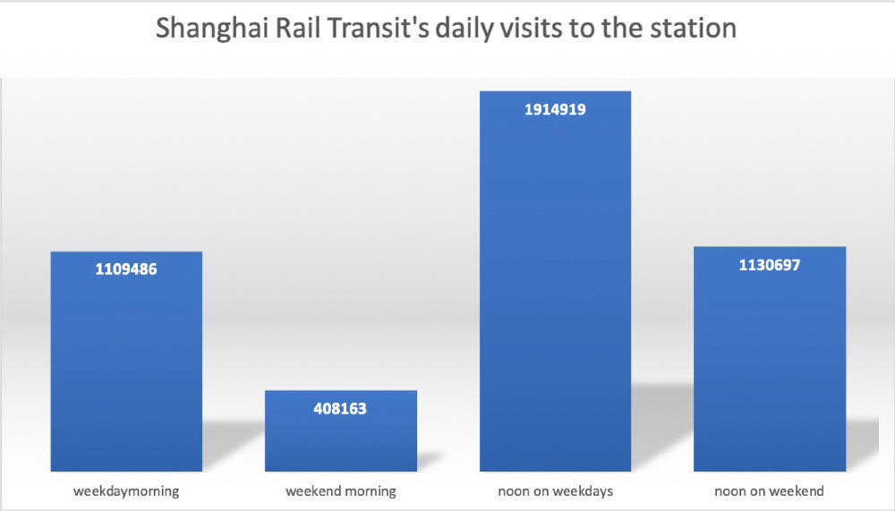

DATA ANALYSIS
Systematic Analysis of Transportation Development in ShanghaiPopulation Density Analysis
The population flow data and the distribution map of the Shanghai subway track show the population density of each area. The population distribution density gradually decreases from the inside to the outside.The northern part of the inner ring of Puxi is the most densely populated.It can also be seen from the wide coverage of Shanghai Metro Rail Transit.
Tube and Rail Analysis
Tube
Rail

The connectivity of Shanghai's subway tracks is well developed. Based on the correspondence between base stations and subway stations, passengers' path information within the rail transit system can be obtained. In the multi-path selection scenario, about 70% of passengers still choose the shortest path. Better connectivity gives passengers multiple options to reach their destination.
Through the commuting survey of Shanghai Rail Transit, we can see that during the morning and peak hours of the working day, the number of people entering the Shanghai Rail Transit Station reached 1.1 million, and the subway station in the morning peak period was under great pressure.The morning peak traffic on weekdays is much higher than on weekends.
Comparison of entry station population
The number of people entering the station on weekdays climbed from 6 o'clock and reached a peak at 8 o'clock. After 8:30, the number of people gradually fell, indicating that most people's attendance time is before 9 o'clock, and the single attendance time is between half an hour and one hour.
The chart above is a comparison of the number of people entering and leaving the station at various times on the weekend morning. Compared with weekdays, it shows a completely different state. The peak number of outbound passengers reached 120,000 at 9 o'clock, which is less than one-third of the number of working days. After nine o'clock, the number of people entering and leaving the station tended to be slow, maintaining a level of 110,000 passengers per half hour.